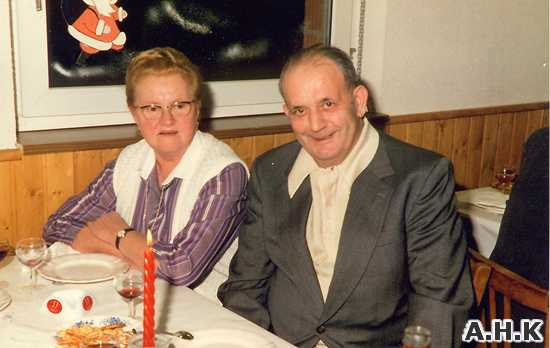
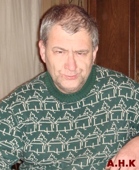

Destinée particulière d’un Rouhlingeois et d’une Kalhausienne
JUNG Joseph Auguste* né à Rouhling le 25 avril 1915 est décédé le 18 août 1988 à Kalhausen. *
Fils de Nicolas Joseph (1875-1939) décédé à Cognac lors de l’exode et de Marie Christine WILLAR (1885-1920).
Il a épousé le 21 octobre 1946 à Kalhausen, MULLER Marie Victorine née à Kalhausen le 31 octobre 1915, décédée le 14 octobre 2002 à Sarreguemines.
Exemple frappant de ce qui pouvait arriver à un Lorrain, JUNG Joseph Auguste, pendant la période 1939/1945.
Il avait fait son service militaire français en 1935/36.
Mobilisé de force par les Allemands en 1943, il s'est trouvé sur le front de l'Est où il fut fait prisonnier par l'Armée Rouge et interné au Camp de Tambov.
Lorsque STALINE donna le feu vert pour constituer un « Corps » de 1500 Alsaciens-Lorrains qui devaient rejoindre l'Armée Française en Afrique du Nord, il se porta volontaire.
Le 02 Juillet 1944, il revêtit l'uniforme soviétique avec le calot frappé de l'étoile rouge et, après quelques jours d'entraînement, fut embarqué en gare de « Rama » où retentit une vibrante « Marseillaise ».
Un long voyage commença via Rostow, Bakou, le long de la Mer Caspienne, au pied du Caucase, à travers l'Azerbaïdjan jusqu'à Tabriz en Iran ; puis transfert en camion à Téhéran où il revêtit l'uniforme britannique.
Après une semaine de repos bien mérité (douches, bonne nourriture, accueil par des officiers français…) la vaillante troupe fut embarquée dans des véhicules de l'Armée de l'Inde, via l'Irak, la Syrie, la Transjordanie, la Palestine jusqu'au port de Haïfa où le Général PABST, un alsacien, les accueillit le 03 Août 1944.
Le voyage sur la Méditerranée comportait 2 étapes : Haïfa / Tarente en Italie, puis Tarente / Alger. Au camp de Ténès – le 30 Août – il revêtit de nouveau l'uniforme français qu'il avait porté 9 ans plus tôt – après avoir porté celui des Allemands, des Soviets, des Anglais… son 4ème uniforme en 2 mois, même un mercenaire ne saurait faire mieux !
Destinée non moins singulière que celle de Marie Victorine JUNG, née MULLER
Après son mariage avec Joseph Auguste JUNG, Marie Victorine, surnommée « Oswàlds Mari », vivait à Kalhausen et s’installa au « Guggelsbèrsch », actuellement, numéro 4 de la rue de la montagne. Elle possédait le pouvoir de guérir le muguet et les dartres.
La manière dont Marie a « hérité » du secret est tout à fait originale. Alors qu’elle était, dans les années 30, apprentie couturière à Sarralbe, Marie prenait son déjeuner chaque jour dans la famille WAHL, où une certaine dame WOLF était blanchisseuse.
Les femmes se côtoyaient, elles ont dû lier connaissance, parler de choses et d’autres et sympathiser. Or, cette madame WOLF était guérisseuse, et cela Marie ne le savait pas, bien qu’elle ait aussi des patients de Kalhausen.
En 1937, elle soigna, en une seule imposition des mains, la petite Joséphine FREYERMUTH, alors âgée de 3 ans et atteinte du muguet. (Communication de sa mère Elisabeth FREYERMUTH). Le temps passa et pratiquement vingt ans plus tard, après son mariage avec Joseph JUNG et la naissance de ses deux enfants, Marie revit la dame WOLF qu’elle avait connue autrefois, et cela dans des circonstances peu communes.
Le plus jeune des garçons, Jean-François, né le 27 novembre 1950, était atteint du muguet et Marie alla consulter, sur les conseils d’une personne du village, Marie SEILER, en l’occurrence, appelée « Burs Mari », une guérisseuse de Salzbronn, près de Sarralbe. Quelle ne fut pas la surprise de Marie de reconnaître en la guérisseuse, la blanchisseuse rencontrée autrefois, du temps de son apprentissage !
Madame WOLF soigna le petit Jean-François et Marie, poussée par on ne sait quelle force, demanda à la guérisseuse de bien vouloir lui léguer son secret. Elle se montra fort réticente devant cette curieuse demande, mais pour donner suite à l’insistance de Marie, elle finit par céder, encouragée par son propre époux. Elle mit cependant des conditions à l’utilisation de ce secret : ne pas commencer à l’exercer avant son propre décès, ne jamais accepter d’argent, soigner tout patient sans distinction.
Marie garda son secret pour elle et un beau jour, elle apprit par le journal le décès de madame WOLF. Alors seulement commença pour elle l’exercice de son secret. Les gens du village n’eurent plus à se déplacer à Salzbronn et ils furent les premiers patients.
Bientôt la renommée de Marie s’étendit dans les communes voisines. Les mères affluaient de partout pour faire soigner leurs nourrissons atteints du muguet. Des adultes venaient également chercher aide et remèdes auprès d’elle.
Telle, cette personne de Montbronn qui après l’échec de plusieurs médecins et sur recommandation de Marguerite BORNER, originaire de Kalhausen et habitant Montbronn, vint se faire soigner avec succès. Tel, cet habitant de Bining, Jean-Luc SCHWANNER, qui vint plusieurs semaines durant, se faire soigner. Telle cette habitante de Kalhausen, Marie HERMANN, appelée « s’ Mihle Mari », qui venait plusieurs fois dans l’année à cause de son état de fatigue générale.
Comme les rebouteux, la guérisseuse n’avait pas le droit de demander de l’argent pour le prix de ses soins. Les gens donnaient parfois une petite bricole, un bibelot. Un jour une personne voulut absolument donner de l’argent. Devant le refus de Marie, elle promit de faire dire une messe à l’intention de l’époux décédé de la guérisseuse.
Si un patient laissait quand même une pièce ou un billet, Marie ne gardait jamais l’argent pour elle, mais le donnait à la quête du dimanche, à l’église, ou à des personnes nécessiteuses du village. D’après la croyance, quiconque utilisait le don pour s’enrichir le perdrait irrémédiablement.
Les techniques de reboutement et de guérison par le secret se ressemblent uniquement par le fait qu’il y a contact avec les mains. Si le rebouteux utilise le contact, le toucher, il fait beaucoup plus car il exerce des pressions sur la zone douloureuse, il manipule, il soigne par une action physique.
La guérisseuse, cependant, pour guérir le muguet, posait simplement une main sur le menton de la personne à soigner et l’autre sur la nuque. Il y avait seulement contact et pas d’action physique. Ensuite elle prononçait des mots, le fameux secret de guérison. Était-ce une prière, une incantation, une sorte de formule magique ? Ou bien Marie soignait-elle uniquement par une action mentale, par le seul travail de son esprit, en se focalisant sur le mal pour le chasser ?
L’intervention ne durait que deux à trois minutes. Parfois trois séances étaient nécessaires pour éradiquer le mal, et cela à trois jours d’intervalle chaque fois. Le patient devait se faire soigner dans une période de la journée comprise entre
L’Angelus du matin et celui du soir. La nuit n’était pas propice au travail de la guérisseuse. Celui qui soigne, qui fait le bien, travaille à la lumière du jour, à la vue de tous, selon la tradition populaire. La nuit est le domaine des ténèbres, du mal. Pour guérir un nourrisson, une seule séance n’était jamais recommandée car l’effet produit sur le bébé aurait été trop fort et donc dommageable au vu de sa constitution encore trop fragile. C’est pourquoi il fallait doser les séances et en pratiquer trois.
Marie JUNG travaillait aussi sur photo, si le patient ne pouvait se déplacer. Dans ce cas, elle posait la photo sur la paume de la main et elle plaçait l’autre par-dessus, sans toucher la photo.
Mais pour qu’il y ait efficacité, il fallait que la personne à traiter soit seule sur la photo. Marie pouvait ressentir ainsi si la maladie était grave ou non. Plus la photo était perçue floue par elle (les témoins ne pouvaient pas le voir) et plus l’affection était sérieuse.
Pour guérir la dartre, Marie frottait la tache cutanée avec une couenne de lard en faisant le signe de croix et en disant une prière. Les personnes qui avaient déjà consulté auparavant apportaient la couenne de lard sinon la guérisseuse s’en procurait une. D’ailleurs cela ne manquait pas dans la maison puisque le ménage JUNG a toujours élevé des porcs pour la consommation familiale.
Au terme de sa vie, Marie n’a pas pu ou voulu transmettre le secret de guérison à ses fils ni à une autre personne. Elle parlait souvent de ce don qu’elle possédait et ses fils attendaient qu’elle fasse le premier pas et qu’elle leur propose de continuer son action. Par respect pour elle, aucun d’eux n’a jamais voulu insister et lui demander le secret. Peu à peu sa mémoire commença à défaillir et elle fut hospitalisée à la suite d’un accident vasculaire cérébral survenu le 26 juillet 2001.
A partir de ce moment tout espoir de connaître le secret fut perdu et Marie la guérisseuse s’éteignit le 14 octobre 2002, emmenant avec elle le secret dans sa tombe.

Profondément croyante, elle avait vécu, simple et discrète, au service de son prochain, ne recherchant ni gloire, ni richesse.
Dommage que son activité de guérisseuse n’ait pas pu se poursuivre par ses deux fils ! Ils étaient prêts tous les deux. Ils ont beaucoup regretté qu’elle n’ait pas proposé de leur communiquer son secret de guérison.
Sources : Destinée de Marie Victorine MULLER : Récit de Gérard KUFFLER, d’après les souvenirs de Gabriel et Jean-François JUNG - décembre 2010.
Destinée particulière de Joseph Auguste JUNG : Récit de Raymond LEHMANN – avril 2023.
